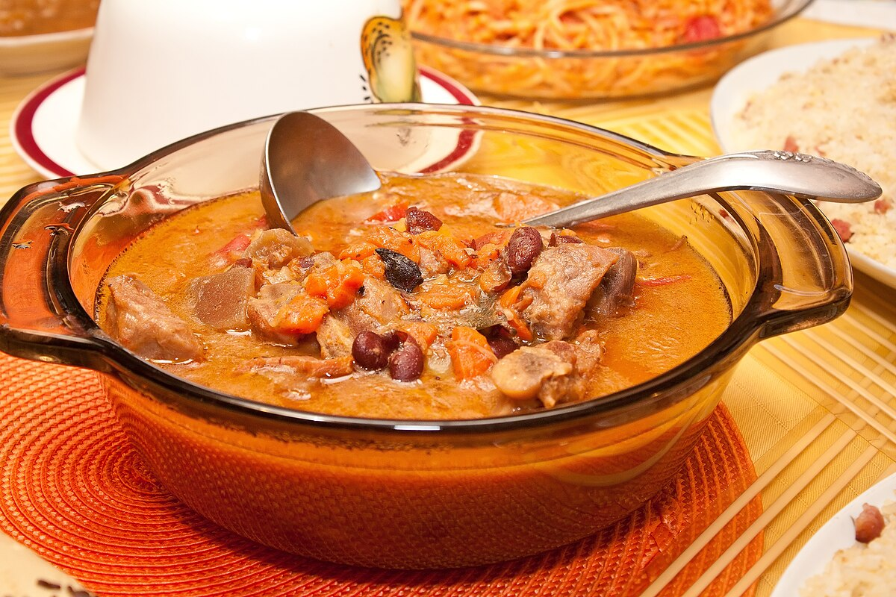

Kaldereta

Description
Kaldereta is a classic Filipino stew made with beef (sometimes goat, pork,
or chicken), simmered in tomato sauce with potatoes, carrots, and bell
peppers. It’s hearty, flavorful, and often served on special occasions
with steamed rice.
Ingredients
- Beef (cubed)
- Tomato sauce & paste
- Potatoes, carrots, bell peppers
- Onion, garlic
- Liver spread (optional, for richness)
- Cooking oil, salt, pepper
- Bay leaves
Cooking Process
- Sauté garlic and onion in oil.
- Add beef and cook until browned.
-
Pour in tomato sauce, a little water, and bay leaves. Simmer until beef
is tender.
- Add potatoes and carrots; cook until almost soft.
-
Mix in bell peppers and liver spread; season with salt and pepper.
- Simmer a few more minutes, then serve with rice.
Back to main page